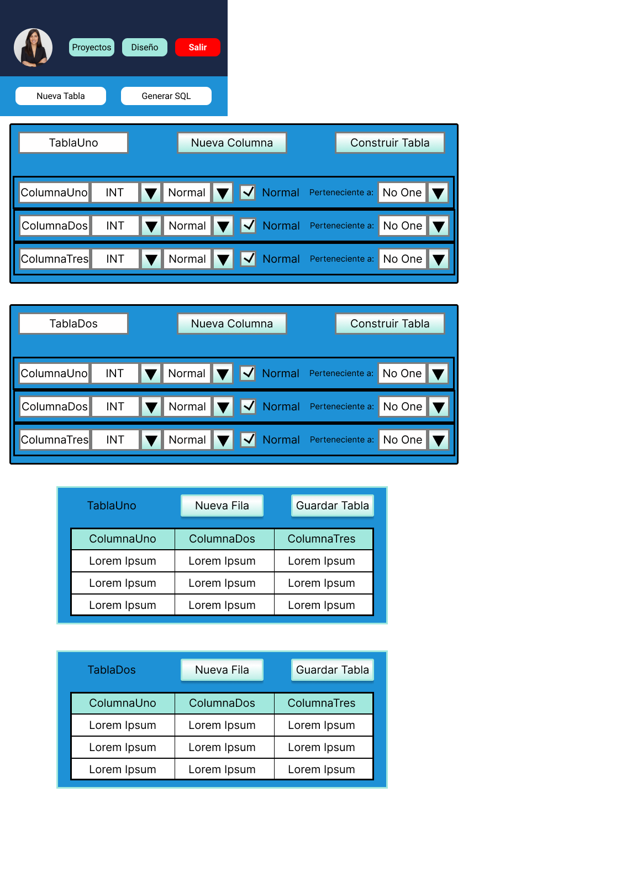
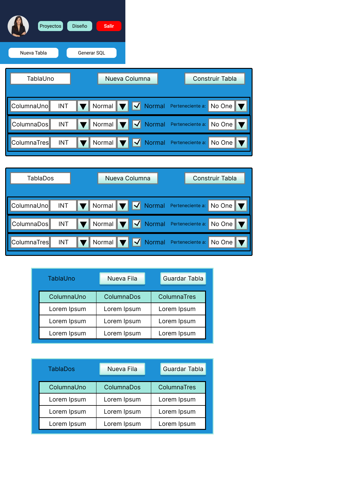

El Rol de Diseñador en el Proyecto
Diseñador de Experiencia de Usuario
Enfocado en la experiencia completa del usuario con un producto.
Como tareas está la investigación de usuarios, arquitectura de de información, wireframes, pruebas de usabilidad.
Diseñador de Interfaz de Usuario
Enfocado en la apariencia visual del producto.
Diseño de pantallas , iconograafía, colores, estilos visuales.
Diseñador de Interacción
Enfocado en cómo los usuarios interactúan con el sistema.
Tiene como tareas el diseño de flujos, comportamientos del sistema ante la interacción del usuario, prototipos interactivos.
Investigador UX
Enfocado en comprender al usuario a fondo.
Las tareas empleadas son, entrevistas, encuestas, pruebas de usabilidad, análisis de dagtos cualitativos y cuantitativos.
Especialista en Usabilidad
Enfocado en evaluar la facilidad de uso del producto.
Pruebas A/B, análisis heurístico, pruebas con usuarios.
Diseñador UX Móvil
Enfocado en las experiencias en dispositivos móviles.
Adaptabilidad, gestos táctiles, rendimiento en pantallas pequeñas.
Diseñador de Prototipos o Prototipador UX
Enfocado en crear prototipos funcionales de interfaces.
Prototiposde baja y alta fidelidad, simulaciones interactivas.
El Objetivo del Proyecto
Se trata de una aplicación, con la finalidad de ayudar a los desarrolladores web que no tengan mucho conocimiento SQL. Esta aplicación es multiplataforma.
El Público Objetivo
Desarrolladores web sin conocimiento SQL, o conocimiento casi nulo.
Los principales desafíos o limitaciones
Que el usuario pueda diseñar tablas, relaciones y claves foráneas sin saber SQL. Convertir las acciones gráficas (como arrastrar, conectar, establecer propiedades) en instrucciones SQL válidas y eficientes. Mantener la consistencia bidireccional entre lo visual y lo lógico al importar/exportar proyectos SQL o estructuras complejas. Leer un archivo .sql, interpretarlo en estructura visual, e insertar daos de forma segura y comprensible. Diselar el generador de scripts de forma flexible para adaptarse a diferentes dialectos SQL. Crear una interfaz amigable, intuitiva, con ayuda contextual que oriente al usuario sin neceisdad de consultar documentación técnica. El sistema debe de ser multiplataforma, es decir, funciontar tanto en móvil, como en laptop.
Los detalles del estudio de investigación
Se estuvieron buscando personas candidatas para probar la usabilidad del diseño de este proyecto, se obtuvieron tanto personas que se ven involucradas en el desarrollo web, como otras que no. Los resultados son variados.
Se ubicaron puntos de dolor como: Algunos usuarios no saben ni qué es una base de datos en SQL o MySQL. Algunos usuarios presentan problemas a la hora de desarrollar una base de datos, como no saber ni cómo definir una tabla. Según algunos de las personas, un problema constante que tenían era cuando había que definir una PK o FK, puesto que algunos usuarios no entienden las relaciones entre tablas.
Los conceptos de diseño iniciales
Propósito Principal
Crear una herramienta visual que permita a usuarios diseñar bases de datos relacionales y generar automáticamente el código SQL necesario para construir dichas bases de datos en un motor como MySQL.
Interfaz Gráfica como Medio Central
El usuario puede crear y manipular gráficamente: tablas, columnas, claves primarias y foráneas, relaciones entre tablas. Esta interfaz se convierte en el punt de partida para generar scripts SQL sin necesidad de escribir código.
Generación de Scripts SQL
El sistema traduce lo que el usuario construye gráficamente en instrucciones SQL válidas y completas. El enfoque se centra en que el script gnerado funcione directametne en MySQL sin requerir modificaciones manuales.
Compatibilidad con Archivos de Proyecto
El sistema permite abrir archivos .sql existentes para analizarlos y representarlos gráficamente. También se pueden guardar los esquemas como proyectos, permitiendo edición y reutilización posterior.
Audiencia Objetivo
Estudiantes y profesionales en formación. Personas que no dominan el SQL pero necesitan generar estructuras de bases de datos. Usuarios que aprenden bases de datos relacionales mediante visualización y práctica.
Bocetos o esquemas de página
A continuación se presentan los bocetos en papel escaneados.
Los resultados de pruebas de usuario
Las pantallas son dinámicas y básicas, el usuario puede familiarizarse de manera correcta, se presenta un flujo corto, sin contratiempos ni trabas.
Maquetas o prototipos de alta fidelidad de diseños finales y pulidos
A continuación se presentan los prototipos de alta fidelidad, que son los diseños finales y pulidos.
Este es el prototipo del diseño de móvil.

 



Este es el prototipo del diseño de laptop.


Una conclusión que señale lo aprendido
GenScriMySQL se perfila como una herramienta educativa y profesional que facilita la creación de bases de datos mediante una interfaz visual intuitiva. Su propuesta de valor radica en reducir la complejidad técnica del diseño relacional, permitiendo a usuarios con distintos niveles de experiencia construir estructuras sólidas y generar scripts SQL funcionales en cuestión de minutos.
El enfoque como aplicación web adaptable a cualquier dispositivo asegura que la plataforma esté siempre al alcance del usuario, ya sea desde una computadora de escritorio, una tableta o un smartphone. Esta flexibilidad permite a estudiantes, docentes y desarrolladores trabajar desde entornos diversos sin perder fluidez ni funcionalidad. El diseño responsive garantiza que los elementos visuales, como tablas, relaciones y botones de acción, se ajusten correctamente al tamaño de pantalla, manteniendo una experiencia de usuario coherente y eficiente.
En definitiva, GenScriMySQL no solo democratiza el diseño de bases de datos, sino que lo hace de forma moderna, accesible y multiplataforma, cumpliendo con las exigencias de un entorno digital cada vez más conectado y dinámico.